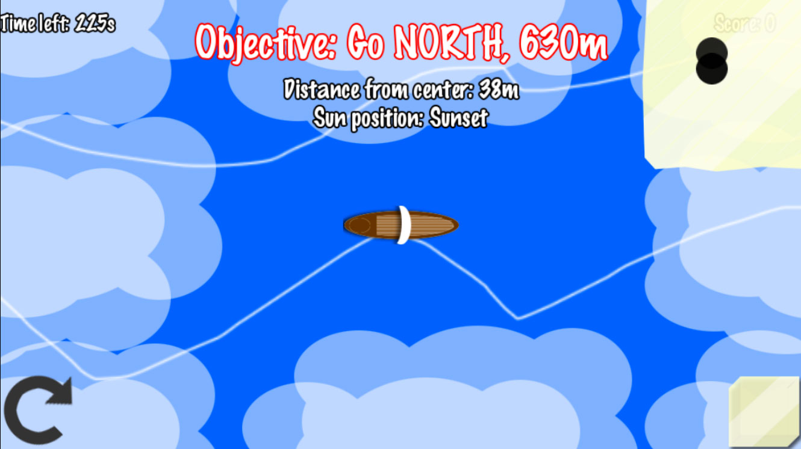
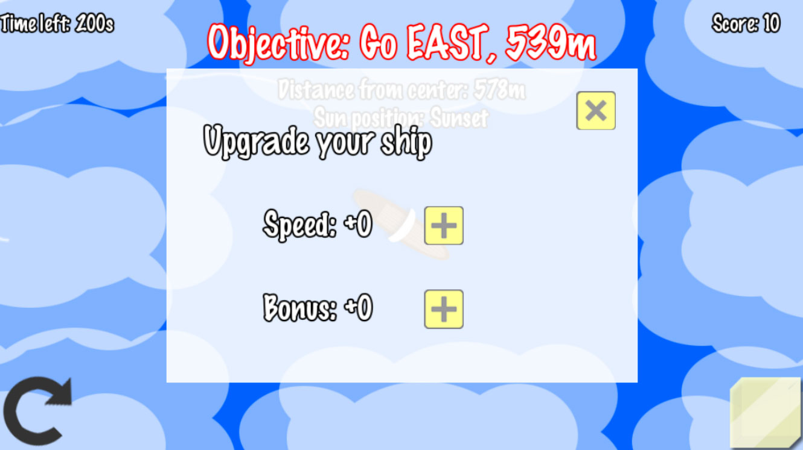
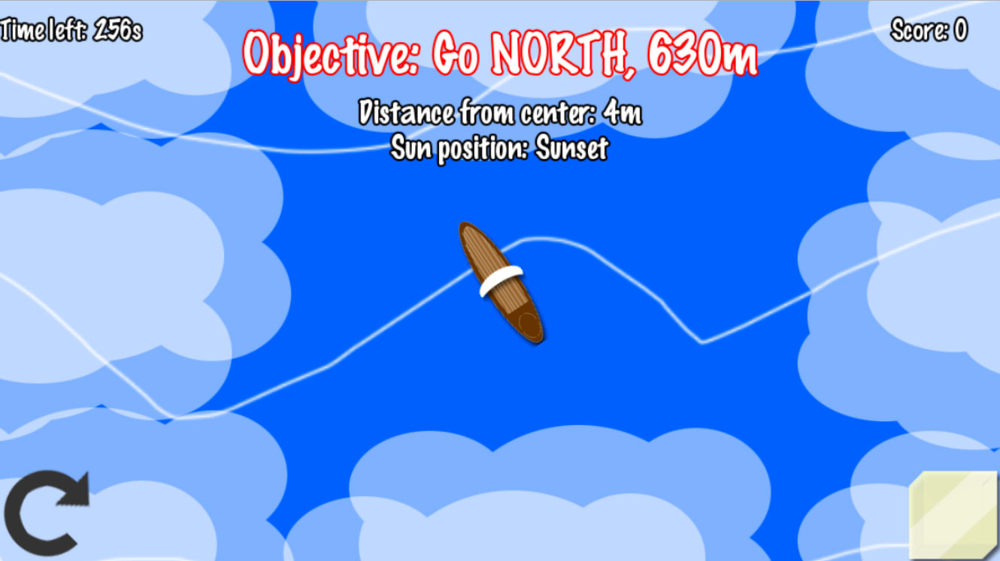
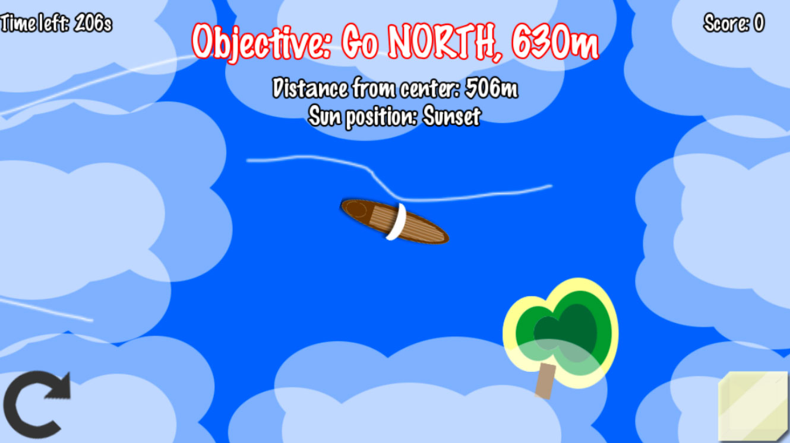
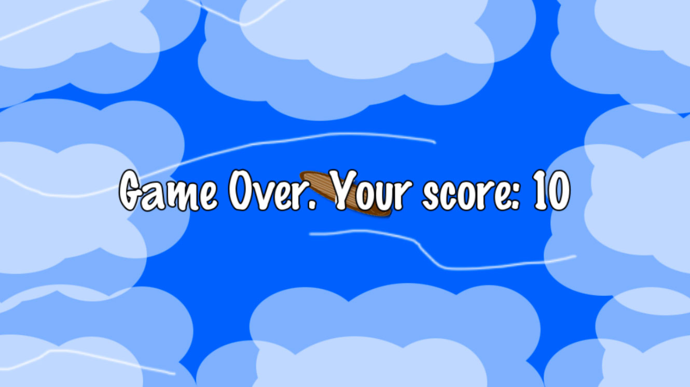

Pela quinta vez consecutiva participei do Ludum Dare na competição de fazer um jogo sozinho em 48 horas. Desta vez o tema era Ancient Technology (tecnologia antiga) e depois de descartar ideias relacionadas ao Egito e Idade da Pedra (que eram meio obvias para o tema), acabei lembrando de um episódio da série Vikings onde eles usavam uma pedra para achar o sol em dias nublados, e meu jogo foi baseado nisso.
Antes de iniciar fiz uma pequena pesquisa para a entender como esta pedra conhecida como Sunstone era utilizada. Parece que não é certo que foram utilizadas historicamente, porém existem evidências que foram encontradas em navios naufragados e a região mais comum de encontrá-la é na Islândia, um lugar bem conhecido pelos Vikings. O video abaixo é um dos melhores que encontrei que explica um pouco sobre este assunto.
Game Design
Desta vez foi a maior prioridade do meu projeto, pensar bem no game design do jogo. Depois de ficar duas horas pensando no tema e chegando na conclusão acima, fiquei mais umas 2 ou 3 horas pensando na jogabilidade. Pensei em bastante coisa para este jogo, e achei que daria para fazer tudo, mas infelizmente não deu para fazer tudo.
A mecânica base do jogo é você encontrar o sol movendo a Sunstone pela tela. Quando os dois pontos ficam pretos na mesma intensidade (conforme imagem abaixo), lá é onde o sol está. Além desta informação o jogo fala a posição do sol: nascendo ou se pondo. Com estas duas informações é possível encontrar a direção em que você está navegando, e é assim que se acredita que Vikings navegaram antes da invenção do compasso.

O jogo te dá um objetivo: ir para uma direção e uma determinada distancia do centro do mapa, que é a posição inicial do jogo. Para tornar o jogo simples eu assumi que o sol sempre nasce no LESTE e sempre se poem no OESTE. Assim, é possível saber exatamente onde fica a direção do objetivo e chegar na ilha para entregar as encomendas, ganhar 10 pontos e receber uma nova missão. Além disso, o jogador ganha um upgrade do navio, que pode ser aumentar a velocidade em 10 ou aumentar a pontuação em 1.
Infelizmente levei boa parte dos dois dias para programar esta mecânica e fazer a arte necessária, então o resto do jogo saiu bem diferente do que planejei. A ideia inicial era que o jogador poderia escolher qual missão queria, sendo que elas iriam variar entre perto, médio e longe, e a distancia e recompensa seriam diferentes para cada uma. Também pensei em um upgrade de carga que faria o jogador poder aceitar entregas maiores.
O jogo terminaria em 7 dias de trabalho, sendo que cada dia o jogador teria 12 horas para fazer as missões, que consumiriam as horas de acordo com a distância navegada. No fim, não foi possível fazer nada disso e implementei uma pontuação simples onde o jogador tem 5 minutes (300 segundos) para fazer o máximo de pontos até o tempo acabar.

Programação
Repeti o mesmo erro consciente de usar uma engine/framework que não uso há um tempo ou que é novo para mim. No Ludum Dare anterior utilizei a Defold, que era nova pra mim. Desta vez utilizei uma velha conhecida, porém que não usava há alguns anos, a Cocos2d-x.
Atualmente a Cocos2d-x está na versão 3.12, e na última vez que utilizei estava na versão 2.X. Muita coisa mudou, muita mesmo, desde nome de classes até a maneira de utilizar algumas coisas. Na época nem tinha suporte ao C++11 e hoje está presente em praticamente tudo neste framework. Acabei não tendo tempo de me atualizar, então comecei a utilizar a versão mais nova da Cocos2d-x mais ou menos do jeito que eu lembrava, e sempre que esbarrava em algo consultava a documentação online (que hoje está muito boa e completa).
Desta vez decidi que o foco do meu jogo seria mobile, então desenvolvi no Mac OS X usando Xcode, sempre testando no emulador e em um aparelho Android. A Cocos2d-x está muito melhor hoje, e é bem simples compilar e testar outras plataformas sem precisar abrir outra IDE ou tools utilizando a linha de comando. Devido essa facilidade, era bem rápido testar. Eu desenvolvia no Xcode e testava no emulado, mas quando necessário rodava um simples comando para fazer o deploy e testar em um aparelho Android. Depois da compilação inicial que demora alguns minutos fica bem rápido, compilando apenas as alterações no código.

Nos últimos anos trabalhei muito com Unity, usando C#, e com HTML5, usando Javascript, e estava sentido falta de programar em C++. Praticamente desde a EA fechou em 2013 eu não programava em C++, e é uma sensação incrível pra mim. Vou tentar utilizar C++ com mais frequência, e também me atualizar com o C++11.
Este foi o primeiro Ludum Dare que utilizei um framework para fazer o jogo, sendo que nos quatro anteriores utilizei três vezes a Unity e uma vez a Defold, ambas game engines. Desenvolver um jogo sem algumas facilidades visuais que uma game engine tem dá mais trabalho, mas mesmo assim não me arrependo de ter utilizado a Cocos2d-x. Mas me arrependo de não ter utilizado algumas tools externas como TexturePacker e Tiled para me ajudar no desenvolvimento.

Arte
Não fiquei tão feliz com a arte como na minha participação anterior, mas mesmo assim foi muito melhor do que minhas demais participações. Mesmo sendo uma arte simples, fique feliz com o meu barco e a ilha. As nuvens foram um detalhe legal, e se você reparar elas se movem lentamente pela tela, sem tampar o campo de visão no centro da tela. Minha Sunstone ficou aceitável, porém não fazia ideia de como representá-la e esta foi minha melhor arte.
Infelizmente não consegui fazer música e efeitos sonoros. Esta foi a primeira vez que não coloquei nem efeitos sonoros, e a segunda vez que não coloquei música em um jogo no Ludum Dare. Acabei deixando para depois e não sobrou tempo, sendo que fiz a mecânica de pontuação na última meia hora antes das 48 horas acabarem.

Conclusão
Na minha última participação fique feliz com a programação e a arte, mas deixei o game design de lado. Desta vez foquei tanto no game design que pensei em um jogo grande demais para eu fazer em 48 horas, e isso acabou afetando a arte (ficou simples e sem som) e a programação (nas últimas horas a qualidade do código ficou bem ruim). Não fiquei feliz com o resultado, mas ainda assim fiquei feliz em ter participado e pelas lições que aprendi desta vez.
Esta foi a primeira vez que não fiz uma build para Web, e sinceramente isto não fez falta. O jogo está funcionando bem em aparelhos Android, iOS (infelizmente não tem como colocar uma build para download, mas da pra compilar o projeto e testar), Mac e Windows (se você não viu esta build lá é por que ainda não atualizei, preciso compilar em um Windows).
Ainda não encontrei um equilíbrio bom entre Arte, Programação e Game Design, mas acredito que estou chegando perto de saber a dose certa de atenção que devo ter em cada área para fazer um jogo completo em 48 horas. Desta vez tive praticamente as 48 horas livres, dormi bastante de sexta pra sábado e pouco de sábado para domingo. No fim não foi um grande problema, pois mesmo com 48 horas sem dormir o jogo ainda estaria grade demais para eu fazer em 48 horas do jeito que imaginei.
O código do jogo está disponível no GitHub e na página do jogo no Ludum Dare existem mais informações sobre como baixar e jogar. O próximo Ludum Dare será em dezembro e já estou bem ansioso! Talvez eu tente novamente utilizando C++, porém ainda estou em dúvida se utilizo Unreal Engine ou chuto o balde e tento fazer algo no Linux (já trabalhei usando Ubuntu e Debian para programar backend, mas nunca um jogo). Talvez eu mude de ideia até lá e utilize algo diferente, ou algo que já usei. Na verdade não sei ainda, mas já estou ansioso para a próxima vez.